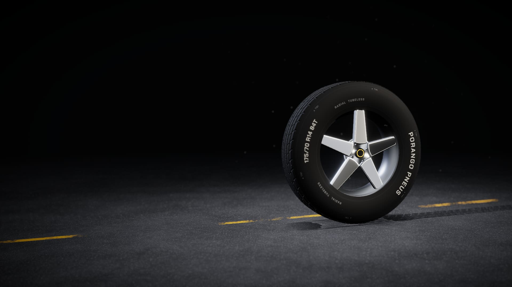
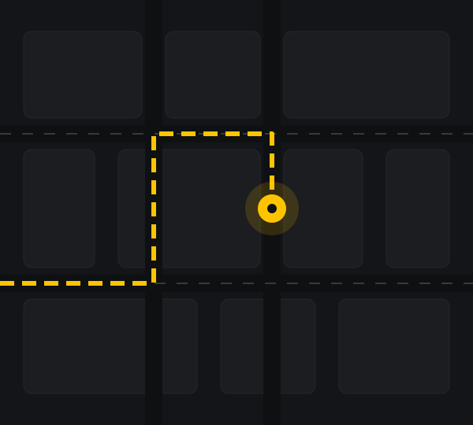

Venda de pneus
Você manda a medida pelo WhatsApp e recebe a cotação do pneu certo para o seu carro.
Quando: Sulco perto do TWI, bolha, corte no flanco ou pneu ressecado.
Porango Pneus

● Loja de pneus · Brasília - DF
Mande a medida do seu pneu pelo WhatsApp e receba a cotação sem sair de casa.
01 Encontre seu pneu pela medida
Ela está gravada no flanco, a lateral do pneu. Role e veja o que cada parte quer dizer.
Medida de exemplo: 175/70 R14 84T
175Largura
175 mm de uma lateral à outra do pneu. Quanto maior, mais borracha encosta no chão.
70Perfil
A altura do flanco é 70% da largura: 122,5 mm. Perfil alto absorve mais buraco.
R14Aro
R é a construção radial. 14 é o diâmetro da roda em polegadas: o pneu só serve em roda 14.
84Índice de carga
84 quer dizer até 500 kg por pneu. Nunca monte um índice menor que o do manual.
TÍndice de velocidade
T quer dizer até 190 km/h. É a velocidade máxima que o pneu aguenta com carga.
02 Por dentro do pneu
01Banda de rodagem
A parte que toca o chão. Os sulcos tiram a água do caminho e seguram o carro na frenagem e na curva.
02Cintas de aço
Lonas de aço logo abaixo da banda. Deixam o pneu firme, estável em reta e mais resistente a furo.
03Carcaça
O esqueleto do pneu: lonas de cordonéis que seguram a pressão do ar e sustentam o peso do carro.
04Flanco
A lateral. Absorve impacto e traz gravadas a medida, os índices e a data de fabricação.
05Talão
Anel de arame de aço que prende o pneu no aro e veda o ar. Montagem errada danifica o talão.
03 Serviços
Chame no WhatsApp com o serviço que precisa. A mensagem já vai pronta.
Você manda a medida pelo WhatsApp e recebe a cotação do pneu certo para o seu carro.
Quando: Sulco perto do TWI, bolha, corte no flanco ou pneu ressecado.
Desmontagem do pneu usado e montagem do novo na roda, com troca de válvula quando precisa.
Quando: Sempre que trocar o pneu.
Ajuste dos ângulos das rodas para o carro andar reto e o pneu gastar por igual.
Quando: Carro puxando para um lado, volante torto ou depois de pancada em buraco ou meio-fio.
Correção do peso do conjunto pneu e roda com contrapesos, para acabar com a vibração.
Quando: Volante tremendo em velocidade ou depois de montar pneu novo.
{{CONFIRMAR: venda, troca ou reparo de rodas}}
Quando: Roda empenada, trincada ou com vazamento no aro.
{{CONFIRMAR: quais serviços de suspensão a loja faz}}
Quando: Barulho em buraco, carro balançando demais ou pneu gastando torto.
{{CONFIRMAR: quais serviços de freio a loja faz}}
Quando: Chiado ao frear, pedal baixo ou carro puxando na frenagem.
03 Serviços a confirmar
Roda fora de ângulo arrasta o pneu de lado: ele gasta torto e o carro puxa. Roda desbalanceada faz o volante tremer.
Antes: rodas fora de ângulo, laser fora do centro.
Ângulos exagerados na animação para ficar fácil de ver.
04 Marcas que trabalhamos
05 Por que trocar na Porango
Pneu certo, preço justo e a informação clara antes de você sair de casa.
{{CONFIRMAR: como é o atendimento (ex.: por ordem de chegada, agendamento pelo WhatsApp)}}
{{CONFIRMAR: garantia dos pneus e dos serviços}}
{{CONFIRMAR: formas de pagamento e parcelamento}}
{{CONFIRMAR: vende pneu novo, remold ou seminovo}}
{{CONFIRMAR: atende carro, moto, caminhonete ou caminhão}}
06 Galeria
07 Como chegar

Mapa ilustrativoQuando o sulco chegar a 1,6 mm, que é o mínimo permitido no Brasil. Troque antes se o pneu tiver bolha, corte no flanco, rachaduras de ressecamento ou desgaste irregular. Na dúvida, mande uma foto do pneu pelo WhatsApp.
TWI é o indicador de desgaste: pequenas saliências de 1,6 mm no fundo dos sulcos. Procure o triângulo ou a sigla TWI no ombro do pneu e olhe o sulco alinhado a ele. Se a banda já está na altura da saliência, o pneu chegou ao limite.
É trocar os pneus de posição para que gastem por igual e durem mais. O intervalo certo está no manual do seu carro; muitos fabricantes indicam a cada 10.000 km. Aproveite o rodízio para conferir alinhamento e balanceamento.
Use a pressão indicada pela montadora: ela fica na etiqueta da coluna da porta, na tampa do tanque ou no manual. Calibre com o pneu frio, pelo menos a cada 15 dias, e não esqueça o estepe. Pneu murcho gasta nas bordas e aumenta o consumo.
Pode, desde que sejam do mesmo eixo, com a mesma medida e de preferência o mesmo modelo. Os fabricantes de pneu recomendam montar os novos no eixo traseiro, que dá mais estabilidade em pista molhada.
Ela está gravada no flanco, no formato 175/70 R14 84T: largura, perfil, aro, índice de carga e de velocidade. Também aparece no manual e na etiqueta da porta. Se não achar, mande uma foto da lateral do pneu pelo WhatsApp.